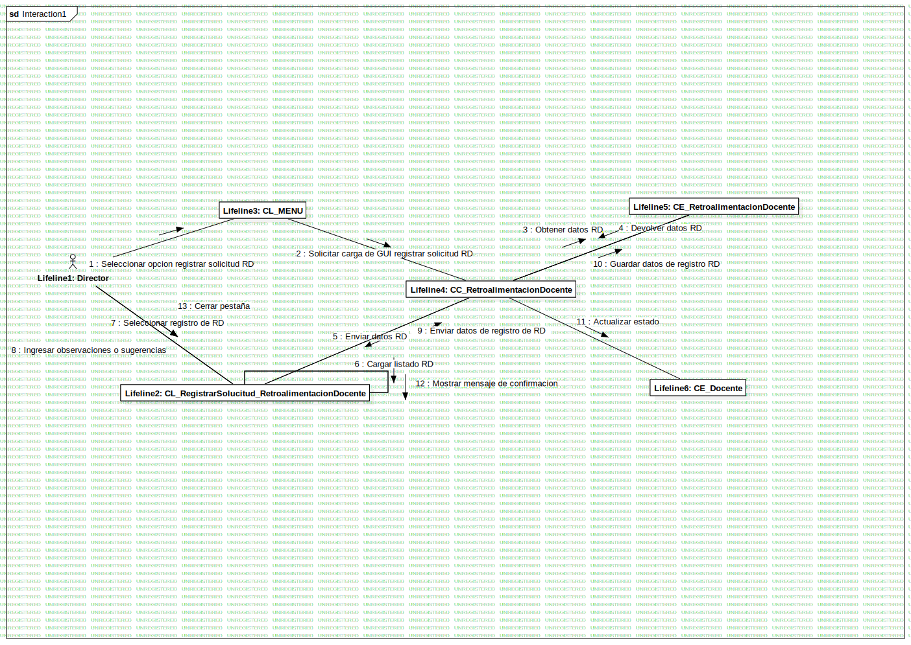

Interaction1
UMLInteraction
Untitled
::
4. Modelo De Analisis
::
RA_ Registrar Solicitud de Retroalimentacion Docente
::
Interaction1
Description
none
Diagrams

DC Registrar Solicitud
Participants
Lifeline1: Director
Lifeline2: CL_RegistrarSolucitud_RetroalimentacionDocente
Lifeline3: CL_MENU
Lifeline4: CC_RetroalimentacionDocente
Lifeline5: CE_RetroalimentacionDocente
Lifeline6: CE_Docente
Messages
Seleccionar opcion registrar solicitud RD (Lifeline1→Lifeline3)
Solicitar carga de GUI registrar solicitud RD (Lifeline3→Lifeline4)
Obtener datos RD (Lifeline4→Lifeline5)
Devolver datos RD (Lifeline5→Lifeline4)
Enviar datos RD (Lifeline4→Lifeline2)
Cargar listado RD (Lifeline2→Lifeline2)
Seleccionar registro de RD (Lifeline1→Lifeline2)
Ingresar observaciones o sugerencias (Lifeline1→Lifeline2)
Enviar datos de registro de RD (Lifeline2→Lifeline4)
Guardar datos de registro RD (Lifeline4→Lifeline5)
Actualizar estado (Lifeline4→Lifeline6)
Mostrar mensaje de confirmacion (Lifeline2→Lifeline2)
Cerrar pestaña (Lifeline1→Lifeline2)
Properties
Name
Value
name
Interaction1
stereotype
null
visibility
public
isReentrant
true
Owned Elements
DC Registrar Solicitud